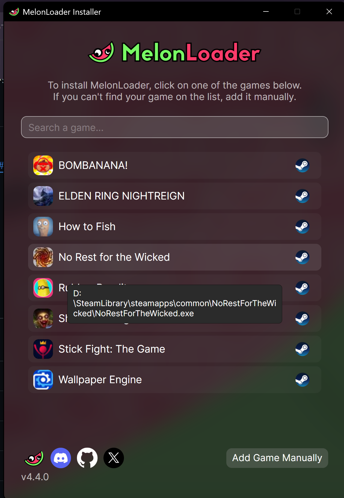
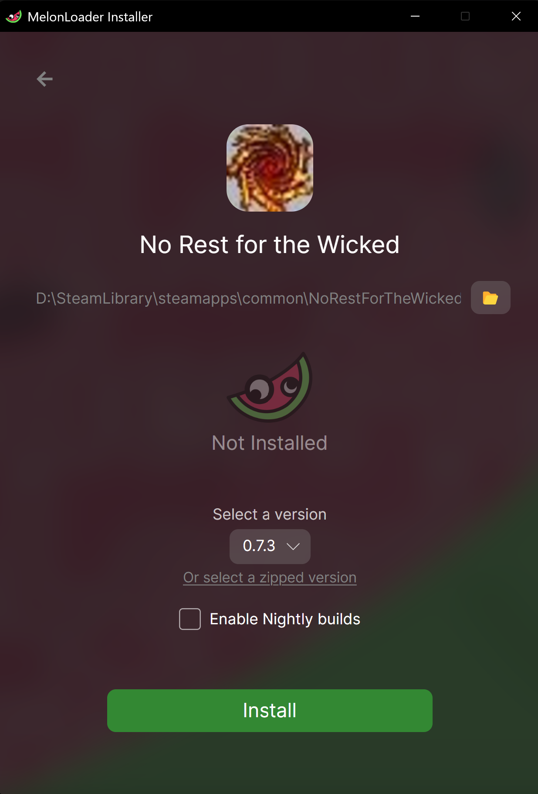
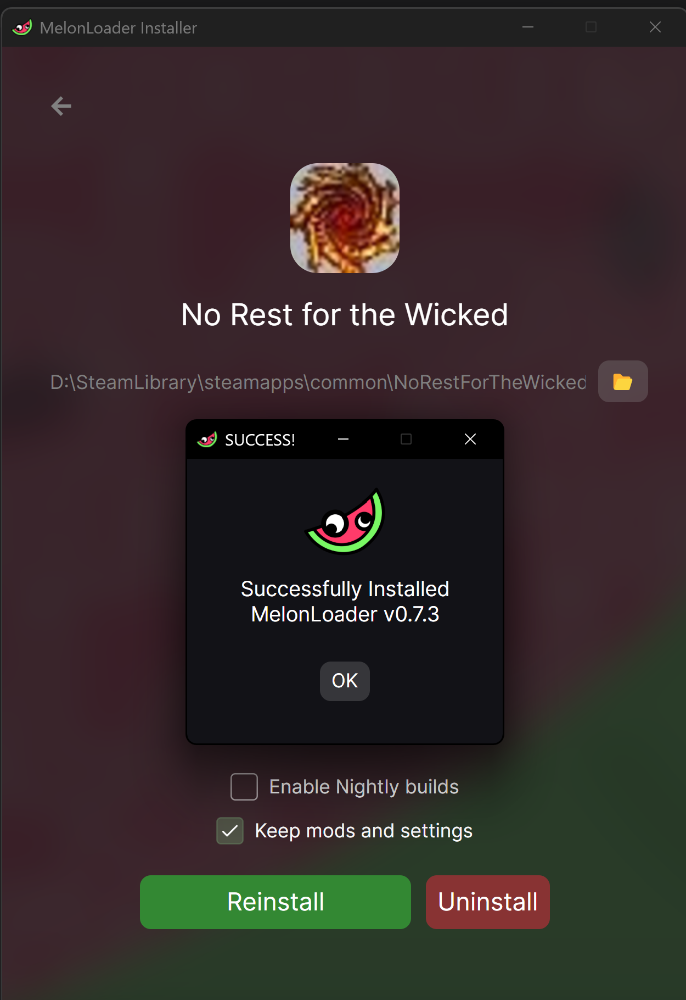
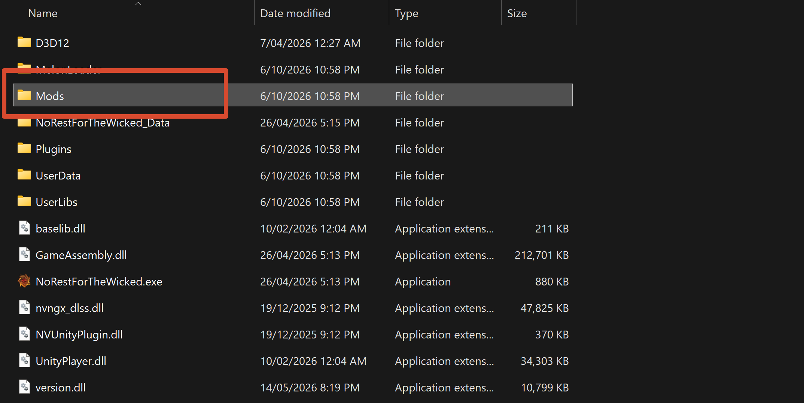
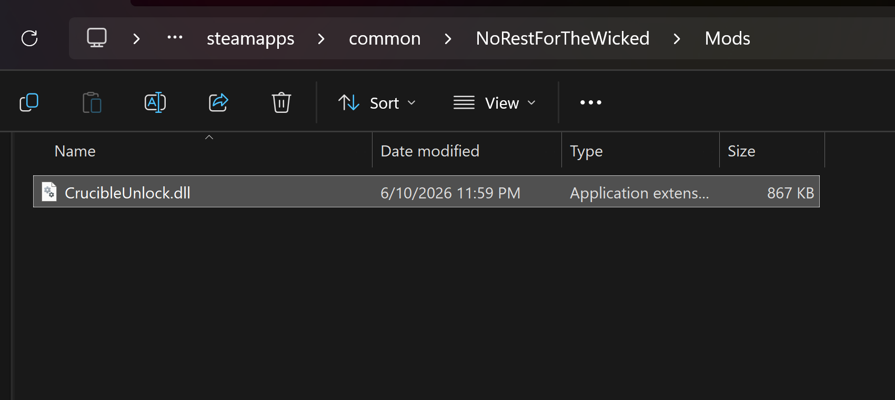
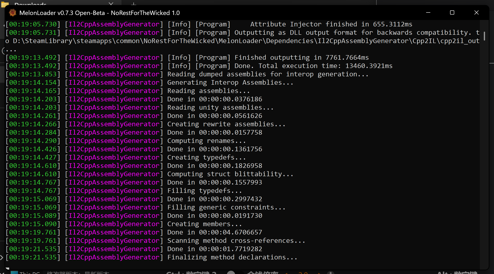
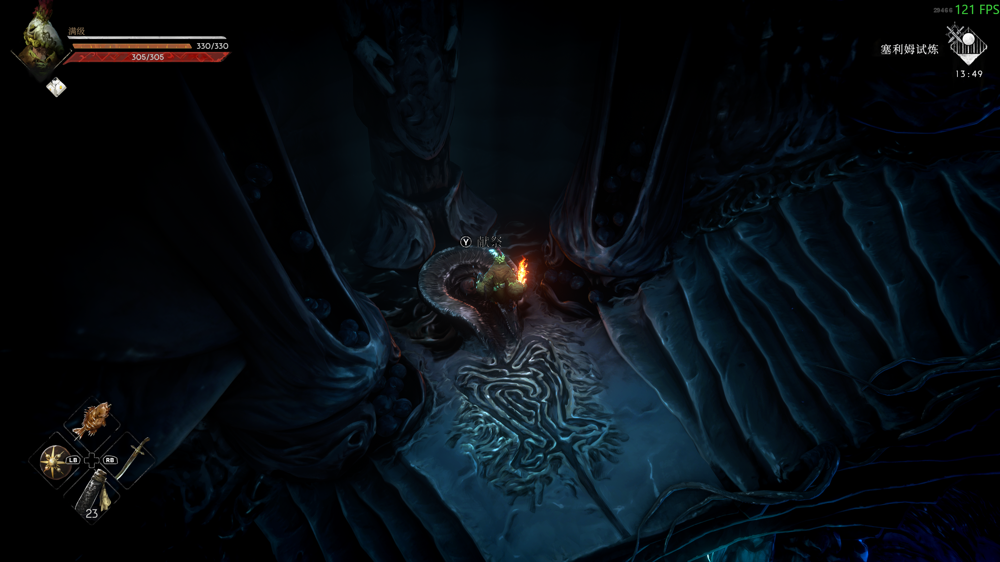

1Preparation
- Download Melonloader
- Download CrucibleUnlock.dll
- Download NRFWBowgunAudioSync.dll
2Install Melonloader
Select the game 《No Rest for the Wicked》

Click Install

Installation complete

3Place both mod DLLs
Open the 📂 Mods folder

Place CrucibleUnlock.dll and NRFWBowgunAudioSync.dll in the same Mods folder. The screenshot shows the core DLL; add the companion DLL beside it.

With a Reinforced Bowgun already equipped offhand, fire using the current block binding (Xbox LB or keyboard/mouse block). The companion DLL supplies bowgun keyboard/mouse input and audio. This release does not grant the weapon.
4Optional settings
A fresh install needs no hand-written configuration: the loader creates UserData\MelonPreferences.cfg on first launch, and the core enables its runtime behavior and accepted repairs by default. To change Boss trace quantity, edit only boss_trace_drop_amount in the existing [CrucibleUnlock] section. The range is 0–1000, the default is 300, and 0 means no target Boss traces drop. Close the game before editing and preserve other mods' sections. Legacy mode, repair toggles, and bowgun_weapon_class are ignored; bowgun class 30 is built in. The optional config example is not required and must not replace an existing shared preferences file.
5Launch the game
The first launch may be slow; later launches are fast

Enjoy BOSS RUSH!
